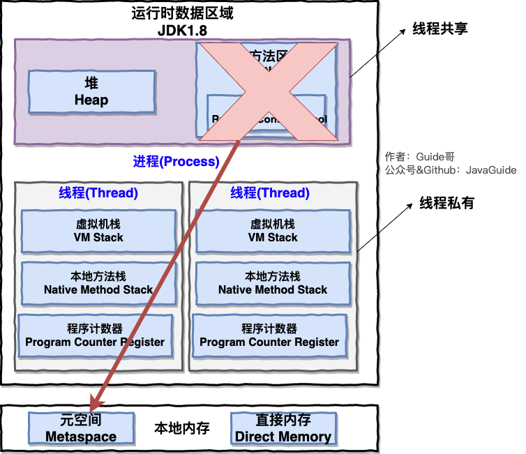

摘要：Java高级之JVM虚拟机，包括类加载机制，创建对象，内存分配机制，GC垃圾回收，JVM调优等。
Student stu = new Student("Tom");
stu.sayName();
1）字节码执行机制：
2）类加载机制：
3）new 创建 student 对象：
stu，字面量"Tom"放在方法区；sayName() 的字节码地址，执行 sayName()。字节码：JVM 可理解的代码（即扩展名为 .class 的文件）。
JVM VS 传统解释型语言：

->源文件(.java）->Javac 编译器->Java字节码文件（.class）->JVM->（特定系统可执行的二进制）机器码
->Class Loader 加载.class文件->Execution Engine 通过解释器逐行解释执行，执行速度相对较慢->Runtime Data Area（运行时数据区，即常说的JVM内存）ClassLoader：用来加载 Class，负责将 Class 的字节码形式转换成内存形式的 Class 对象。
根据（常量池中的）动态链接定位类的符号引用，检查当前类是否已被加载：
加莲厌准姐初

public static int i =3 ;
//第一次初始化后i的值为0，
//第二次初始化后值才为3.
使用：一旦某个类的 Class 对象被载入内存，.class文件就被用来创建这个类的所有（实例）对象。
卸载：GC将无用类从内存中卸载。
工作过程：类加载器收到类加载请求后，
若未被加载（加载未知类时）：
检查顺序：CustomClassLoader -> AppClassLoader -> ExtensionClassLoader -> BootstrapClassLoader
不同层次的类加载器有不同优先级：
WEB-INF/classes下应用自定义的的类和 WEB-INF/lib下的jar应用依赖包中的类。
详解：Tomcat - 都说Tomcat违背了双亲委派机制，到底对不对？、图解Tomcat类加载机制(阿里面试题)
ClassLoader：用来动态加载（按需加载）.class 字节码文件到 JVM 内存（=> 内存形式的 Class 对象）
%JAVA_HOME%/lib目录下的 jar 包和类）、构造其它 ClassLoader；%JRE_HOME%/lib/ext 目录下的 jar 包和类，通常以 javax 开头）；JVM搜索类时判断两个class是相同的，要同时满足：
对于equals()、isinstanceof()等方法来判断对象相等或所属关系都是需要基于同一个ClassLoader。
类的实例化/创建对象的顺序：
按需加载类：
创建对象：
创建对象的步骤：
对象在堆内存的存储布局：
实例数据：存储代码中所定义的各种类型的字段信息。
String str = new String("hello");
// 变量str放在VM栈上的局部变量表中
// 用new创建出来的String对象放在堆中
// 而"hello"这个字面量放在方法区的运行时常量池

自动内存管理：最核心的是堆内存中对象的分配与回收。
每个进程分配一块 JVM 运行时数据区（RunTime Data Area）/ 内存空间，分为两种类型：
栈负责执行方法（运行代码），存放局部变量；堆负责存储数据（对象等）。
表示当前线程（所执行字节码）的行号指示器，由字节码执行引擎负责修改；字节码解释器通过改变程序计数器来依次读取指令，从而实现代码的流程控制：
唯一没有OOM（内存溢出）和 StackOverflowError 的内存区域。
是描述 Java 方法执行的内存模型；每个 Java 方法在执行时会创建一个栈帧，方法从开始调用到执行完成，就是栈帧从入栈到出栈的过程。用于存储：
易出的错误：
>当前VM栈的最大深度；为VM用到的 Native 方法服务，其它与VM栈一致。在 HotSpot VM 中和 Java 虚拟机栈合二为一。
存储对象本身（由 new 和构造器创建）及数组本身，但引用在VM栈的局部变量表中；是 JVM 所管理的内存中最大的一块，在 JVM 中只有一个堆，GC 主要管理的对象；

易出的错误：
（JDK1.7 及以前）HotSpot 用永久代（PermGen）实现方法区，习惯上把方法区称为永久代：
JDK1.8：取消永久代，用 Metaspace 元空间实现方法区；实际位于本地内存中。

《深入理解 Java 虚拟机》书中，方法区（Method Area）用于存储已被虚拟机加载的：
方法区用于存储虚拟机加载的字节码文件。
（根据 jclasslib Bytecode viewer 反编译插件解析的）.class 字节码文件包括：
0XCAFEBABE；"hello"=>加载进字符串常量池；JDK1.7 字符串常量池和静态变量被从方法区拿到了堆中；final 常量值、基本数据类型的值15等；HotSpot 把 GC 分代收集扩展至方法区, 即用堆的永久代来实现方法区；
对方法区内存回收的主要目标是：对常量池的回收和对类的卸载。
易出的错误：
由OS管理；JDK 1.4 引入的 NIO 提供了基于Channel与 Buffer的IO方式，可用 Native 函数库直接分配堆外内存, 用 DirectByteBuffer 对象作为这块内存的引用进行操作, 避免了在 Java堆和 Native 堆中来回复制数据。
null）；常用于普通的对象引用关系，如 String s = new String("Const")；SoftReference 类创建；用于维护一些可有可无的对象，常用于高速缓存中，如 mybatis、浏览器的后退按钮；WeakReference 类创建；1）废弃常量（被运行时常量池回收）：没有被任何对象引用。
2）无用类（被方法区卸载/回收）：需同时满足
3）已死亡对象（被堆回收）：
方法：
可作为GC Roots的对象：
JNI 引用的对象；核心思想是根据对象存活的生命周期将内存划分为若干个区域。JDK1.8 后：

From Survivor0 和 To Survivor1 空间（8：1：1）；
Minor/Young 新生代 GC，将存活对象移动到 S0，年龄默认为1；Minor/Young GC，将存活对象移动到 S1，年龄+1；S1中年龄增加到一定阈值如 15）或 S1 被填满，会被移动到老年代；Full GC ，清理新生代、老年代、方法区，仍无法存储对象则抛出OOM。
Major/Old 老年代 GC，对老年代 GC。在 JVM 的启动参数中加入：
-Xms/-Xmx：设置堆的最小/最大容量；
-XX:InitialHeapSize/-XX:MaxHeapSize；-Xmn：新生代大小；扣除新生代剩下的就是老年代大小；
-XX:MaxNewSize；-Xss：线程栈大小；-XX:NewSize/MaxNewSize：新生代最小/最大值；-XX:MetaspaceSize/-XX:MaxMetaspaceSize：指定元空间大小和最大值（超过最大值时，将进行死亡类及类加载器的垃圾回收），默认为21M和-1（即没有限制）。
-XX:PermSize/MaxPermSize。-XX:SurvivorRatio：新生代 Eden 区 / Survivor 区，默认为 8，即 8:1:1。命令行启动时按如下格式设置：
java -jar -Xms1G -Xmx1G -Xmn512M -Xss1M -XX:MetaspaceSize=128M -XX:MaxMetaspaceSize=128M app.jar
内存溢出的原因：
OOM 分析思路：
-XX:+HeapDumpOnOutOfMemoryError：发生 OOM 时，dump 一份内存快照文件，输出出错时的堆内信息，用于排查问题。-XX:+HeapDumpPath=/usr/local/app/oom目的：减少GC（STW）。
一、JDK 调优命令：
二、Linux 命令行：
三、可视化工具：